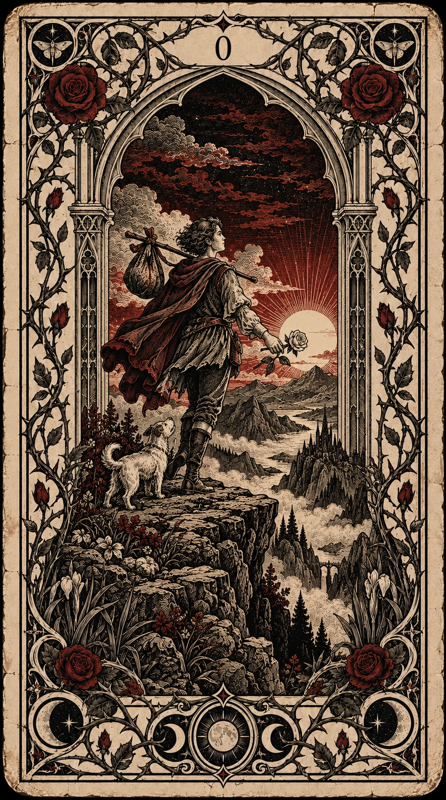
The Fool
ผู้เริ่มเดินทาง
major-00ตั้งตรง: การเริ่มต้น อิสระ เปิดรับประสบการณ์
กลับหัว: ประมาท ลังเล ไม่เตรียมตัว
ก้าวเล็ก ๆ หลังตรวจความเสี่ยง
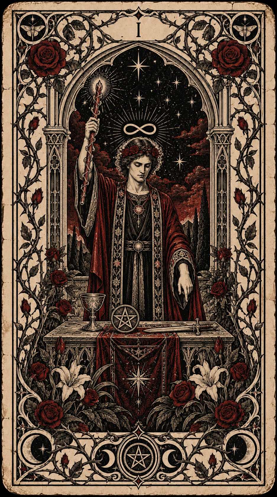
The Magician
ผู้ใช้ศักยภาพ
major-01ตั้งตรง: ลงมือทำ ทักษะ เปลี่ยนความคิดเป็นจริง
กลับหัว: ใช้ความสามารถผิดทาง ขาดสมาธิ
เลือกเครื่องมือที่มีแล้วเริ่มทำ
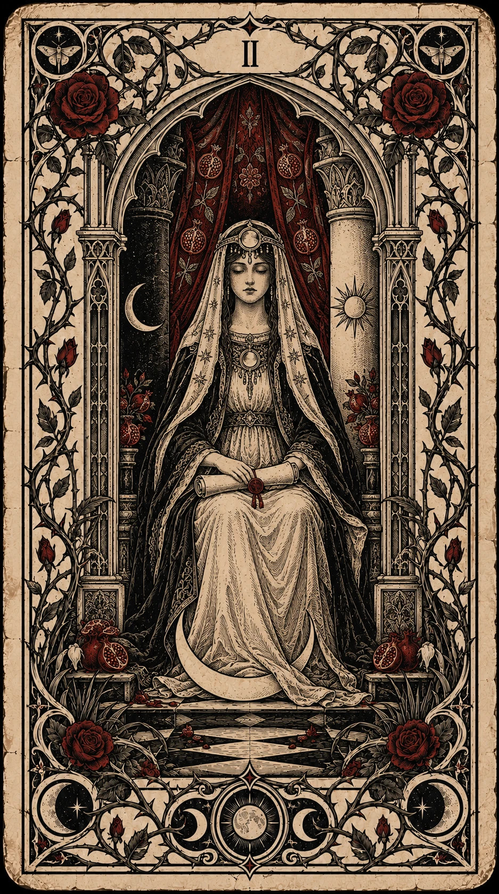
The High Priestess
ผู้รักษาความลับ
major-02ตั้งตรง: สัญชาตญาณ ความเงียบ สิ่งที่ยังไม่เปิดเผย
กลับหัว: ละเลยเสียงภายใน ข้อมูลไม่พอ
เว้นพื้นที่ให้ข้อมูลปรากฏ
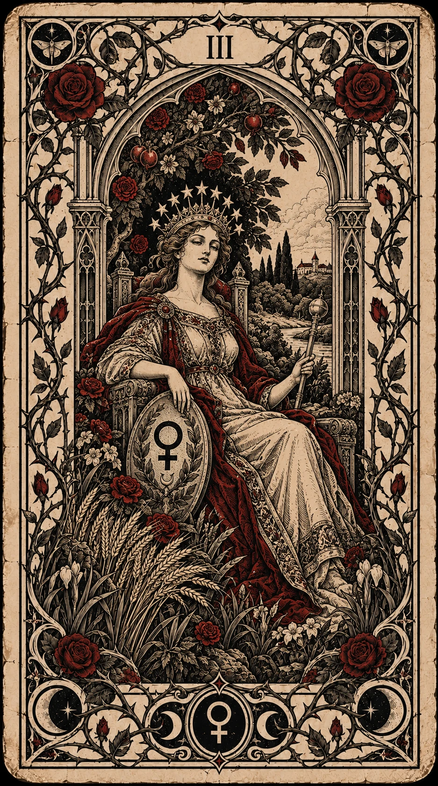
The Empress
ผู้หล่อเลี้ยง
major-03ตั้งตรง: ความอุดมสมบูรณ์ การดูแล ความสร้างสรรค์
กลับหัว: ดูแลเกินขอบเขต ละเลยตนเอง
ดูแลร่างกายและสิ่งที่กำลังเติบโต
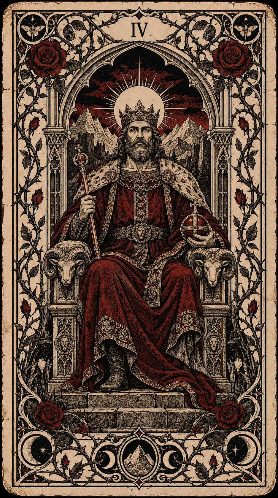
The Emperor
ผู้วางรากฐาน
major-04ตั้งตรง: โครงสร้าง ความรับผิดชอบ ความมั่นคง
กลับหัว: ควบคุมแข็งกร้าว ไร้ระเบียบ
สร้างกติกาที่ชัดและยืดหยุ่น
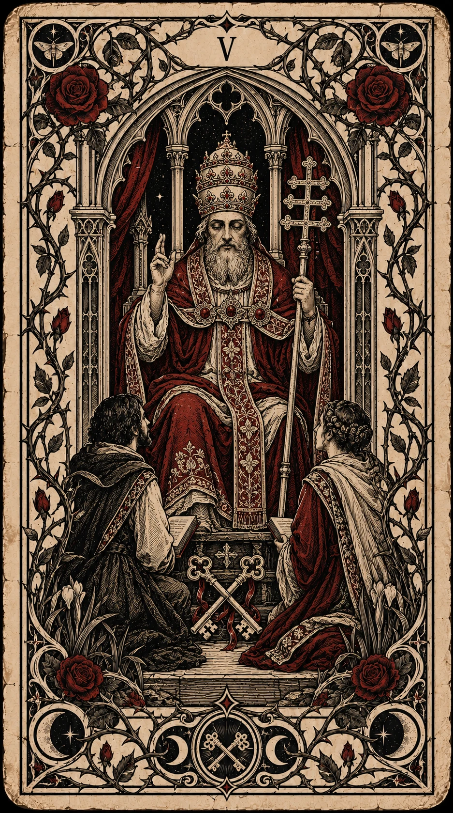
The Hierophant
ผู้ถ่ายทอด
major-05ตั้งตรง: ความเชื่อ ครู ข้อตกลง ประเพณี
กลับหัว: ตั้งคำถามต่อกรอบ ทำตามโดยไม่คิด
ถามว่ากฎใดยังช่วยคุณอยู่
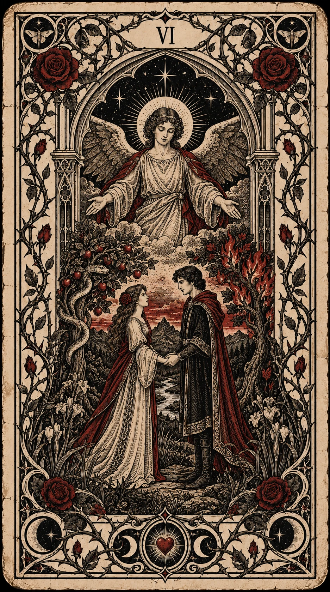
The Lovers
ผู้เลือกผูกพัน
major-06ตั้งตรง: ความรัก ความสอดคล้อง การเลือกด้วยคุณค่า
กลับหัว: ค่านิยมขัดกัน เลี่ยงการเลือก
ตรวจว่าการเลือกตรงกับคุณค่าของตนไหม
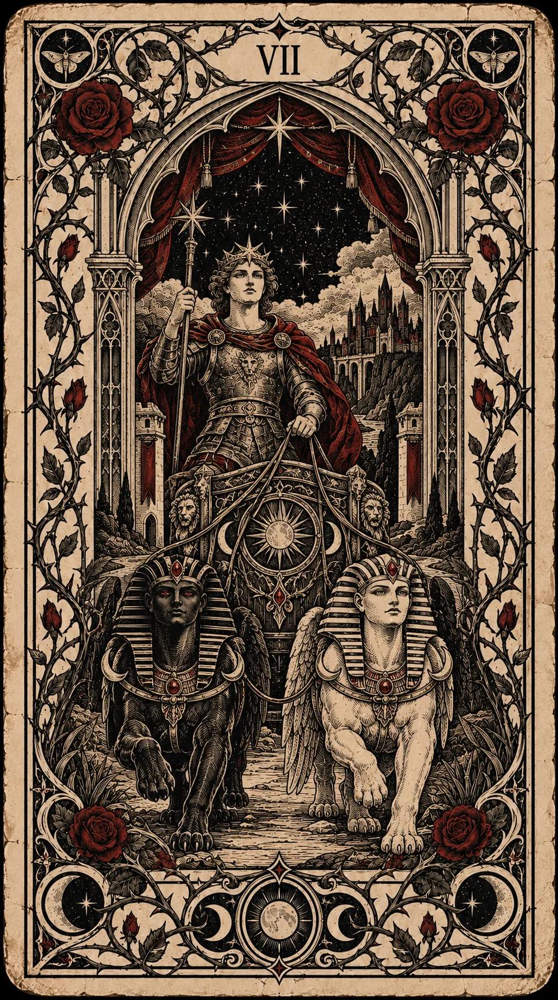
The Chariot
ผู้กำหนดทิศ
major-07ตั้งตรง: มุ่งมั่น กำกับแรงที่ขัดกัน เดินหน้า
กลับหัว: เสียการควบคุม ฝืนไปคนละทาง
กำหนดทิศและจัดแรงให้ไปด้วยกัน
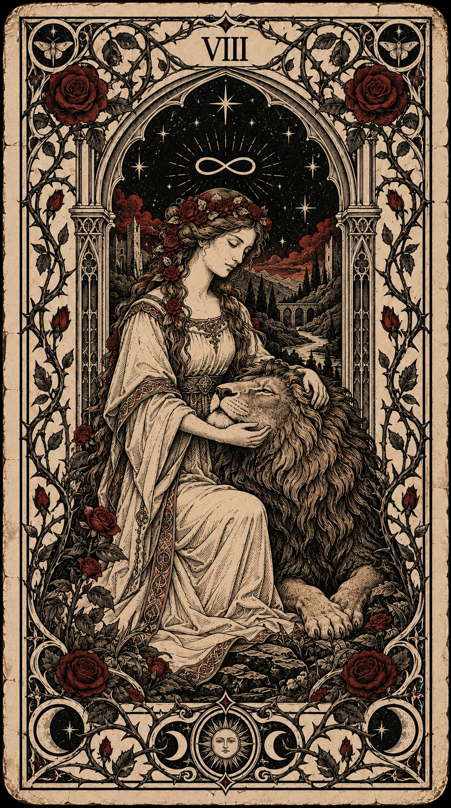
Strength
พลังอ่อนโยน
major-08ตั้งตรง: ความกล้า ความอดทน กำกับอารมณ์
กลับหัว: ไม่มั่นใจ กดอารมณ์ ใช้อำนาจ
ตอบสนองอย่างมีสติแทนการบังคับ
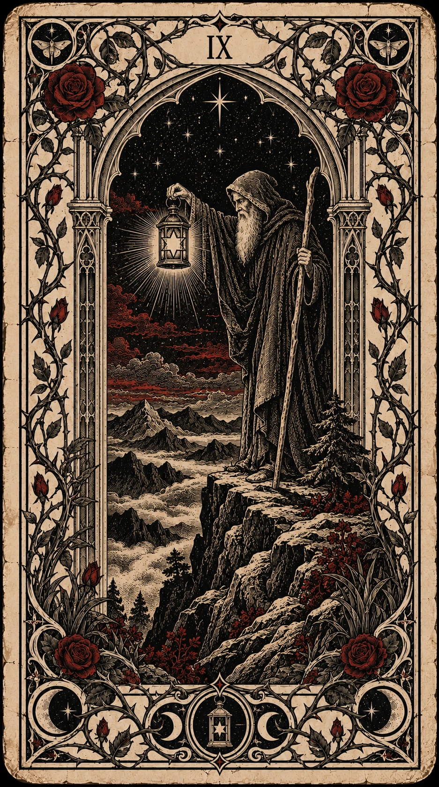
The Hermit
ผู้ค้นภายใน
major-09ตั้งตรง: ทบทวนตัวเอง ปัญญา เว้นระยะ
กลับหัว: โดดเดี่ยวเกินไป ปิดกั้นคำแนะนำ
หาความเงียบที่ช่วยให้เห็นทาง
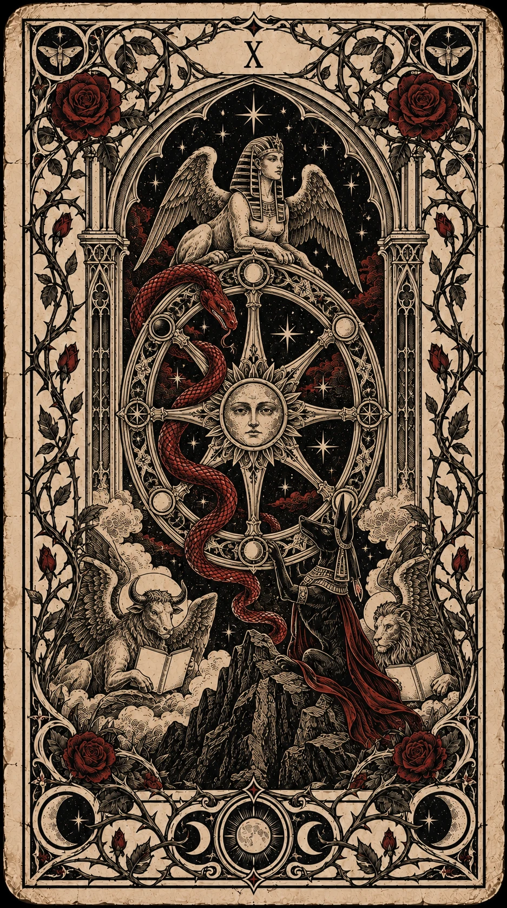
Wheel of Fortune
วงล้อแห่งการเปลี่ยน
major-10ตั้งตรง: วัฏจักร จังหวะเปลี่ยน สิ่งนอกการควบคุม
กลับหัว: ติดวงจรเดิม ต้านความเปลี่ยนแปลง
แยกสิ่งที่ควบคุมได้ออกจากจังหวะภายนอก
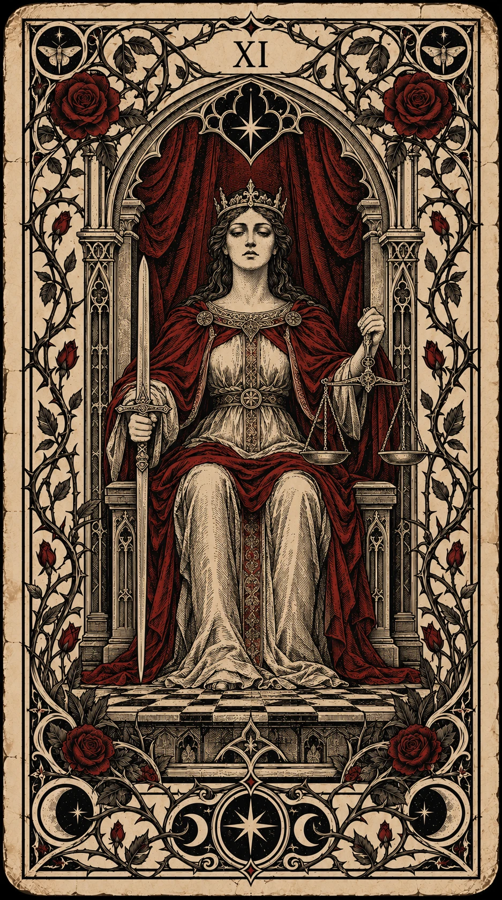
Justice
ดุลยธรรม
major-11ตั้งตรง: ความเป็นธรรม ข้อเท็จจริง ผลของการกระทำ
กลับหัว: อคติ เลี่ยงความรับผิดชอบ
ตัดสินจากหลักฐานและรับผิดชอบส่วนของตน
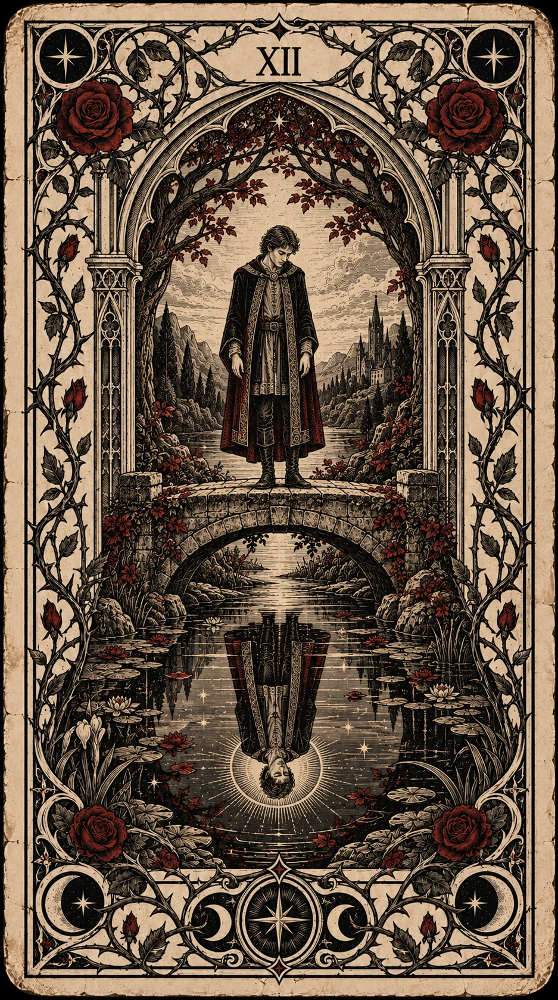
The Hanged Man
ผู้เปลี่ยนมุมมอง
major-12ตั้งตรง: หยุดเพื่อเห็นใหม่ ปล่อยการควบคุม
กลับหัว: ค้างคา เสียสละจนลืมตน
เปลี่ยนมุมก่อนเพิ่มแรง
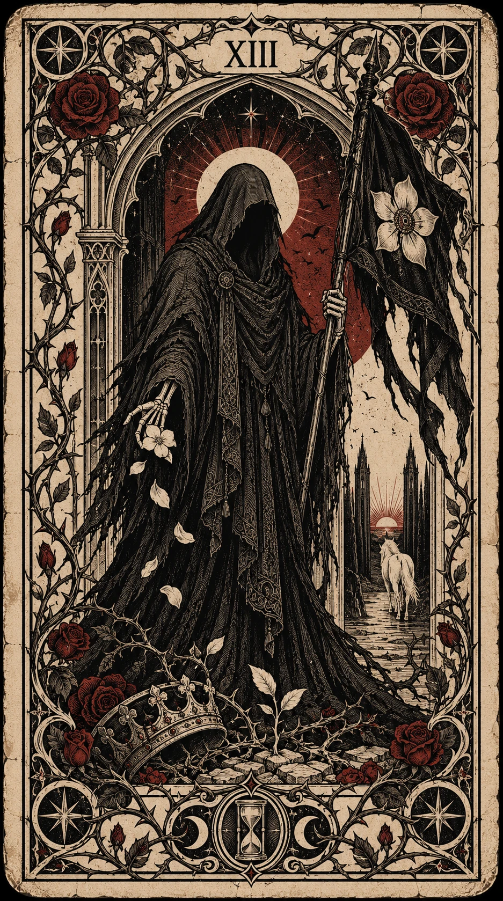
Death
การสิ้นสุดและเปลี่ยนผ่าน
major-13ตั้งตรง: จบวงจร ปล่อยของเก่า เปลี่ยนผ่าน
กลับหัว: ยื้อสิ่งที่จบ กลัวการเปลี่ยน
ระบุสิ่งที่ควรปล่อยเพื่อเริ่มระยะใหม่
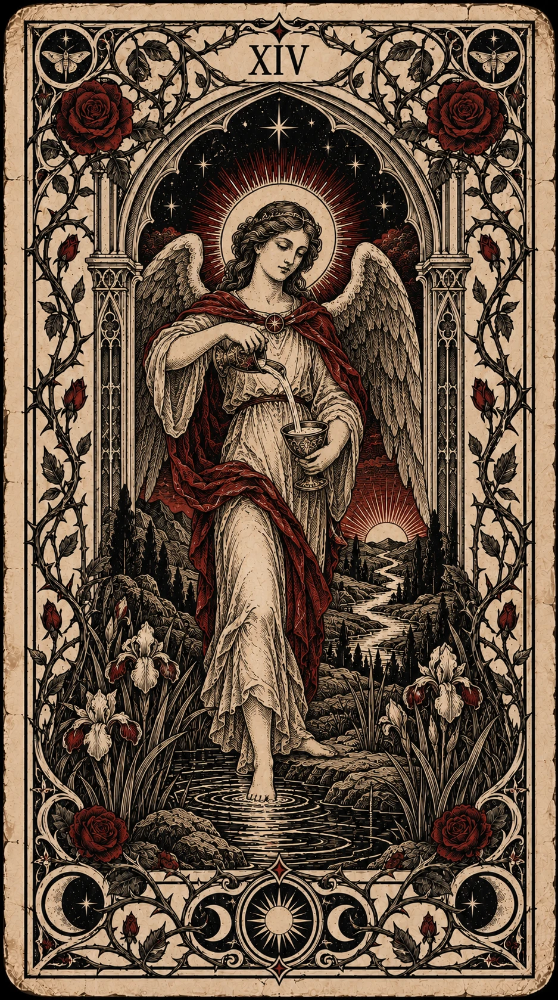
Temperance
ผู้ประสานสมดุล
major-14ตั้งตรง: พอดี ปรับจังหวะ ประสานความต่าง
กลับหัว: สุดโต่ง ไม่ลงตัว เร่งเกินไป
ทดลองปรับทีละน้อยแทนสุดขั้ว
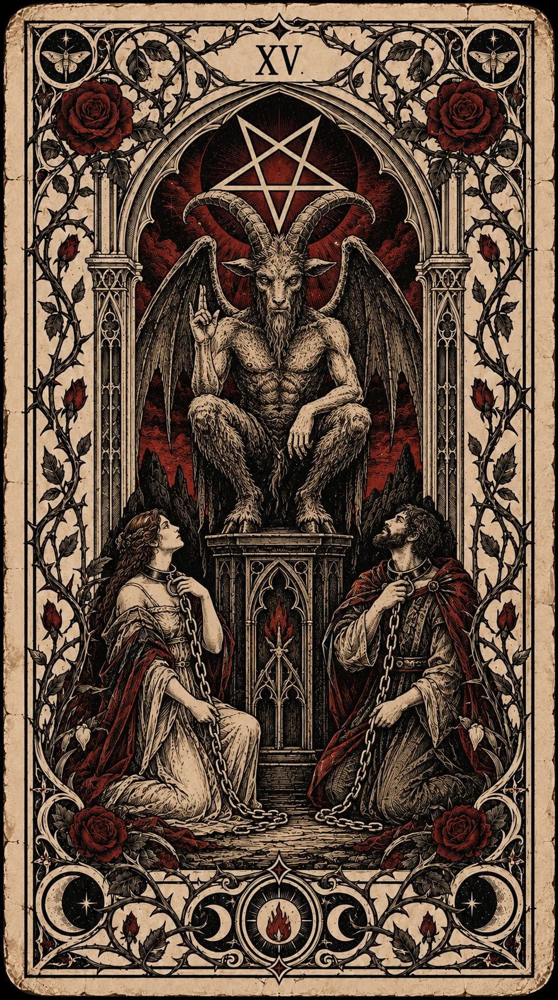
The Devil
พันธนาการ
major-15ตั้งตรง: ยึดติด ความอยาก อำนาจที่ผูกมัด
กลับหัว: เริ่มเห็นพันธะ ปลดการควบคุม
มองว่าพันธะใดคลายออกได้
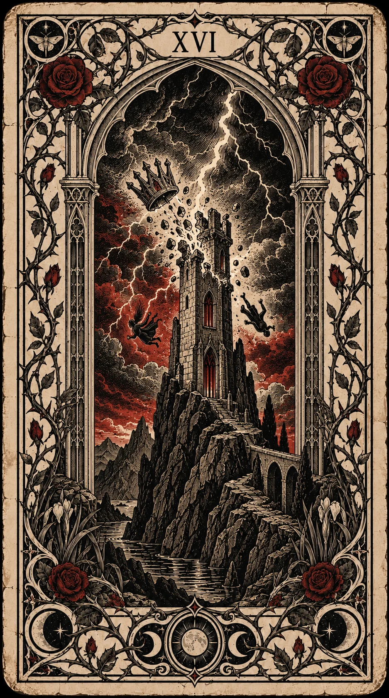
The Tower
หอคอยแตกสลาย
major-16ตั้งตรง: ความจริงฉับพลัน โครงสร้างเดิมสั่นคลอน
กลับหัว: กลัวความจริง ยื้อการเปลี่ยน
รับมือสิ่งตรงหน้าแล้วสร้างฐานใหม่
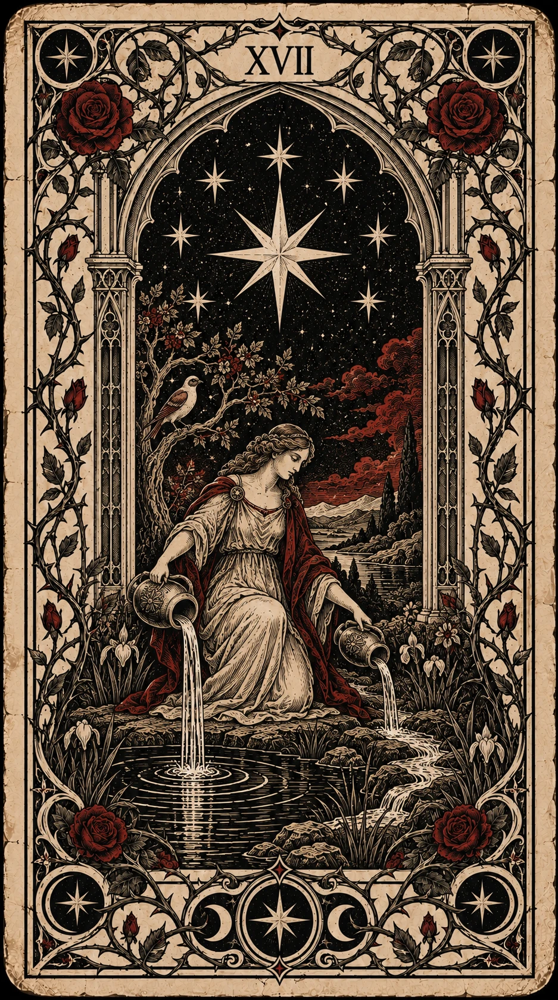
The Star
แสงแห่งความหวัง
major-17ตั้งตรง: ฟื้นตัว ความหวัง ความไว้วางใจ
กลับหัว: หมดแรง ไม่เห็นคุณค่าในความหวัง
เลือกการดูแลเล็ก ๆ ที่ทำได้วันนี้
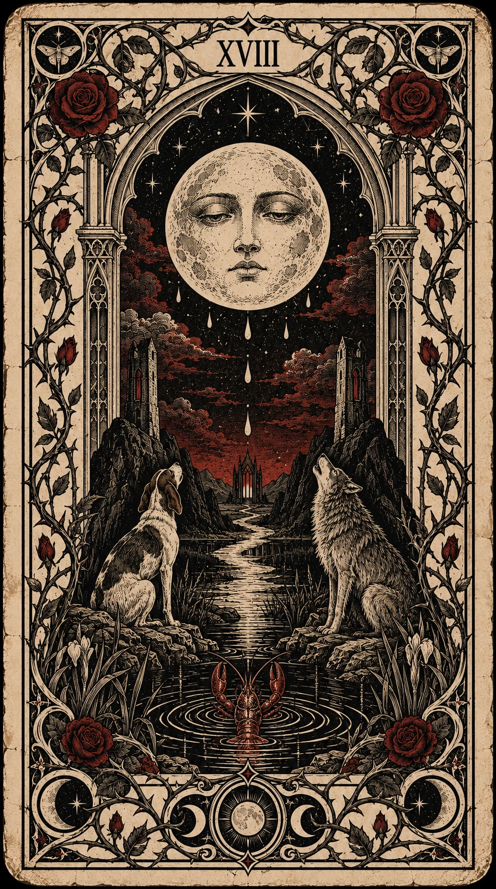
The Moon
ดวงจันทร์
major-18ตั้งตรง: ความคลุมเครือ ความฝัน ความกลัว
กลับหัว: ค่อยเห็นความจริง สับสนภายใน
แยกสิ่งที่รู้จริงจากสิ่งที่กังวล
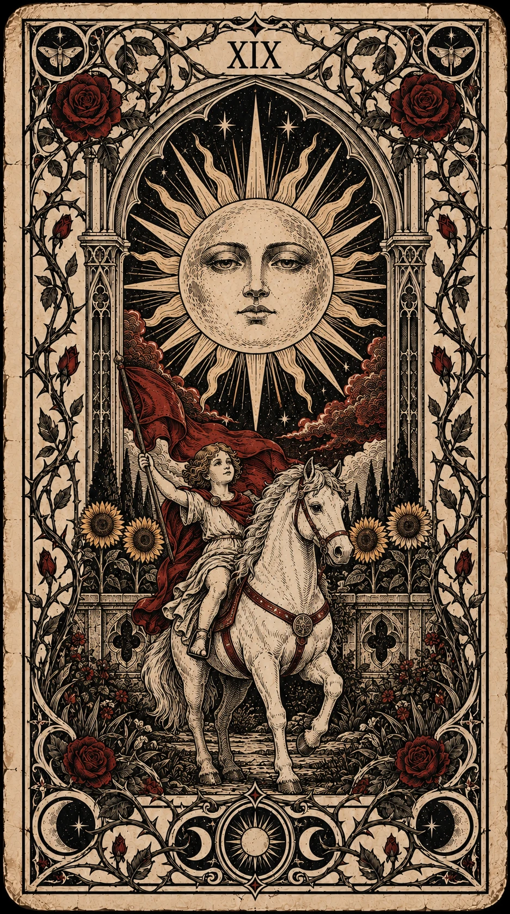
The Sun
แสงแห่งความชัด
major-19ตั้งตรง: ความสุข ความชัดเจน พลังชีวิต
กลับหัว: ความสุขถูกบดบัง คาดหวังเกินจริง
ทำสิ่งที่สร้างความมีชีวิตชีวา
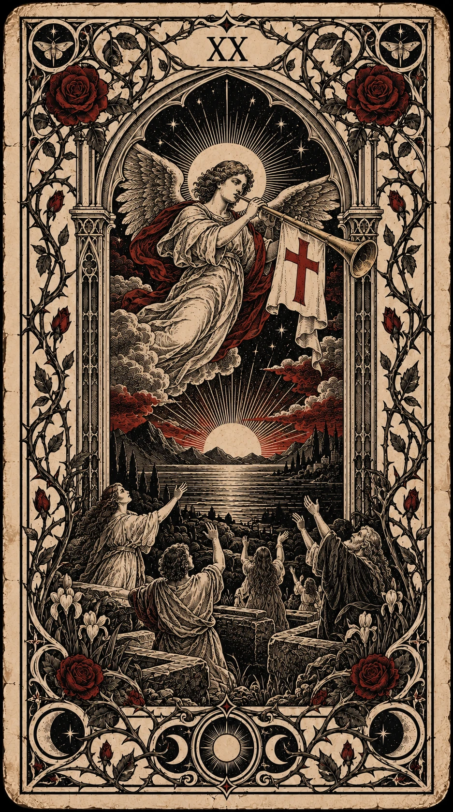
Judgement
เสียงเรียกให้ตื่น
major-20ตั้งตรง: ทบทวนอดีต ตื่นรู้ เลือกใหม่
กลับหัว: ตำหนิตน ไม่ฟังสิ่งที่ต้องเปลี่ยน
ใช้บทเรียนโดยไม่ลงโทษตนซ้ำ
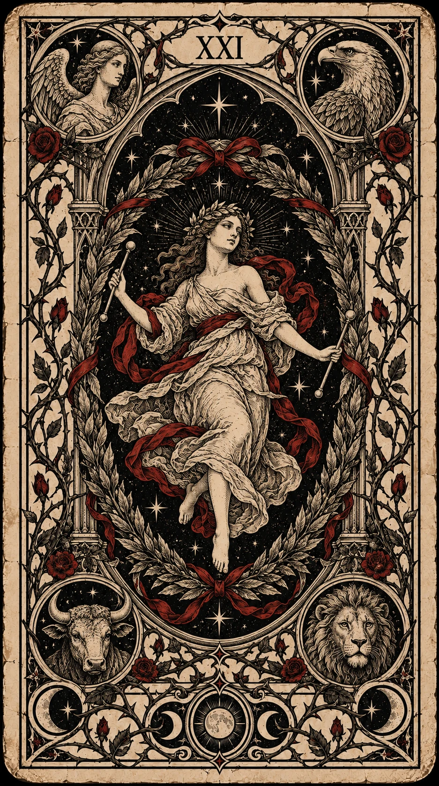
The World
ความครบถ้วน
major-21ตั้งตรง: สำเร็จ บูรณาการ จบวงจร
กลับหัว: งานค้าง ขาดการปิดบท
ปิดงานที่ค้างแล้วฉลองอย่างพอดี
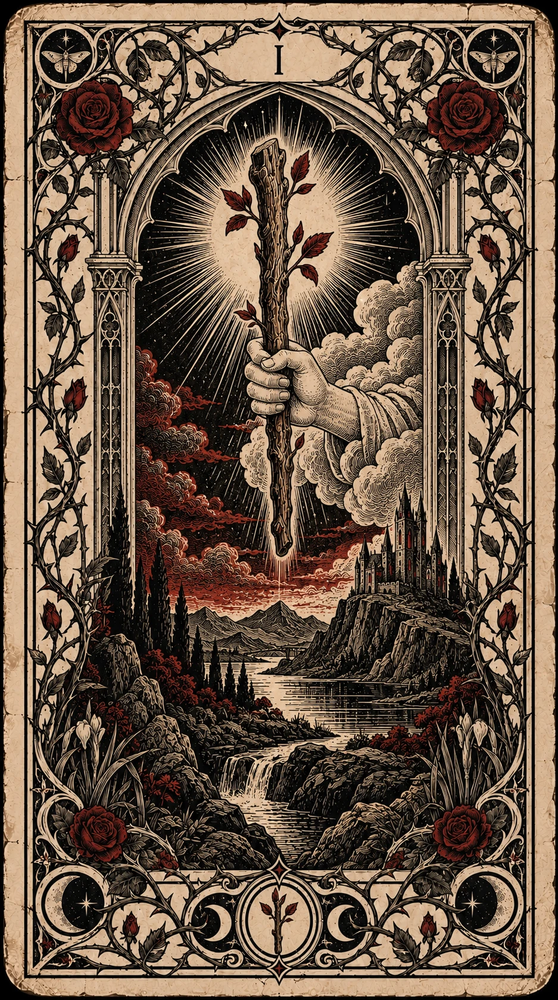
Ace of Wands
หนึ่งไม้เท้า
wands-aceตั้งตรง: ประกายเริ่มต้น แรงบันดาลใจ
กลับหัว: ไฟมอด เริ่มไม่ออก
ลงมือทดลองหนึ่งอย่าง
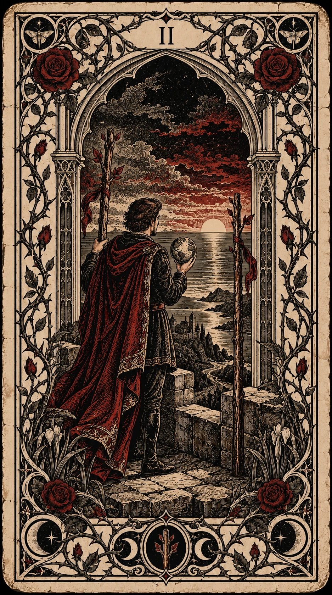
Two of Wands
สองไม้เท้า
wands-twoตั้งตรง: วางแผน มองทางเลือก
กลับหัว: ลังเล กลัวออกจากพื้นที่เดิม
เปรียบเทียบทางเลือกกับเป้าหมาย
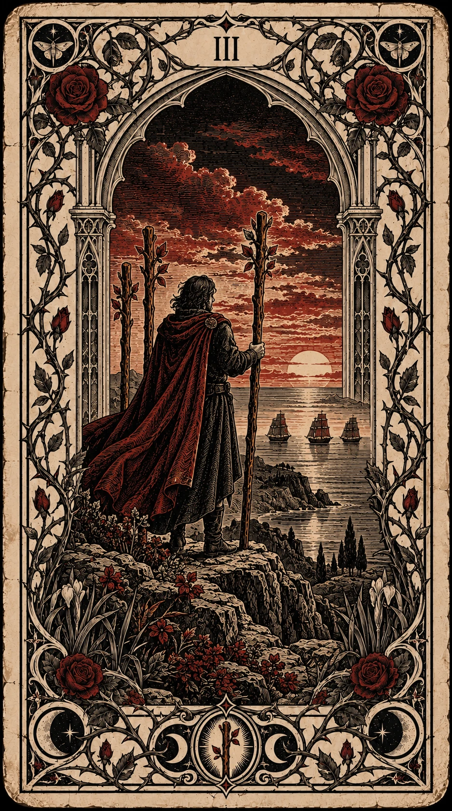
Three of Wands
สามไม้เท้า
wands-threeตั้งตรง: ขยายขอบเขต รอผลจากการลงมือ
กลับหัว: ผลช้า มองไกลเกินฐาน
ตรวจความพร้อมก่อนขยาย
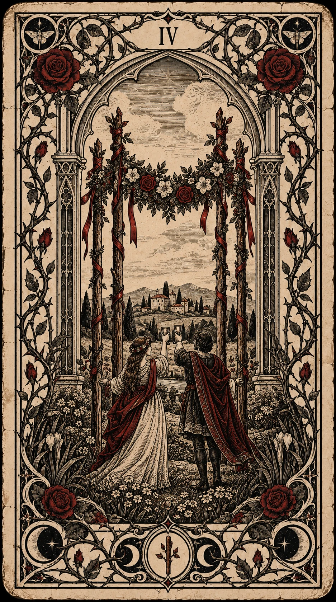
Four of Wands
สี่ไม้เท้า
wands-fourตั้งตรง: บ้าน การเฉลิมฉลอง รากฐานร่วม
กลับหัว: บรรยากาศไม่ลงตัว ขาดการยอมรับ
ยอมรับสิ่งที่ร่วมกันสร้าง
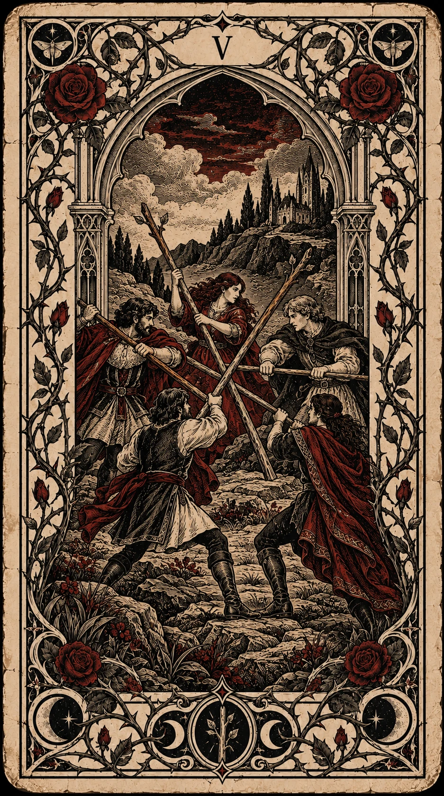
Five of Wands
ห้าไม้เท้า
wands-fiveตั้งตรง: แข่งขัน ความเห็นต่าง การปะทะ
กลับหัว: เลี่ยงปัญหา แข่งจนหมดแรง
ตั้งกติกาการคุย
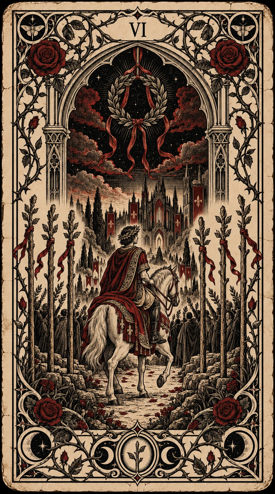
Six of Wands
หกไม้เท้า
wands-sixตั้งตรง: ได้รับการยอมรับ ชัยชนะ
กลับหัว: ต้องการคำชม กลัวเสียหน้า
รับความสำเร็จและให้เครดิตผู้อื่น
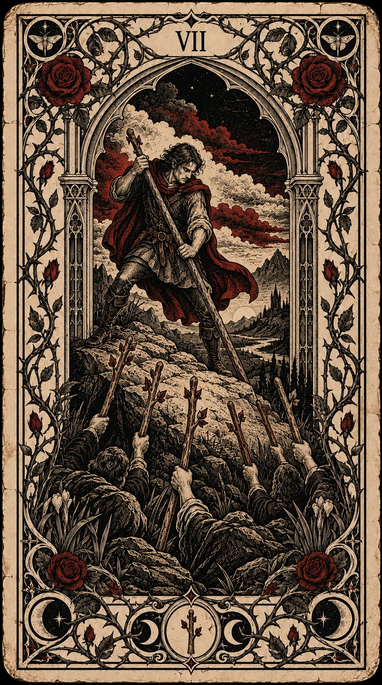
Seven of Wands
เจ็ดไม้เท้า
wands-sevenตั้งตรง: ยืนหยัด ปกป้องจุดยืน
กลับหัว: เหนื่อยกับแรงต้าน ตั้งรับทุกเรื่อง
เลือกสิ่งที่ควรปกป้อง
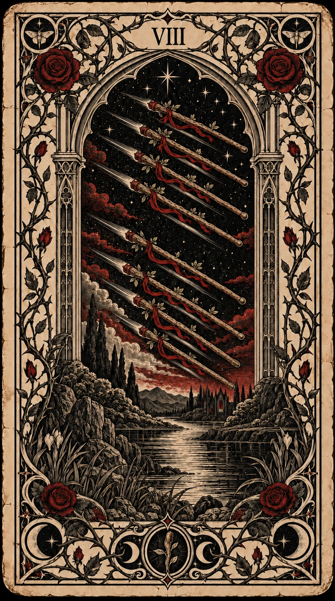
Eight of Wands
แปดไม้เท้า
wands-eightตั้งตรง: ความคืบหน้า ข่าวสาร จังหวะเร็ว
กลับหัว: ล่าช้า สื่อสารสับสน
จัดลำดับก่อนตอบ
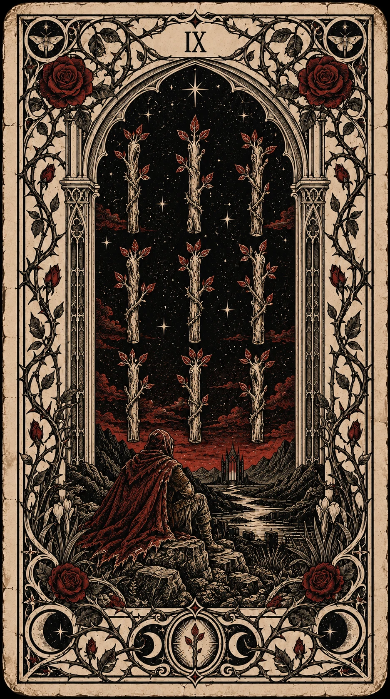
Nine of Wands
เก้าไม้เท้า
wands-nineตั้งตรง: อดทน ระวังตัว ประสบการณ์
กลับหัว: ระแวง หมดแรง ฝืนต่อ
พักแล้วประเมินขอบเขต
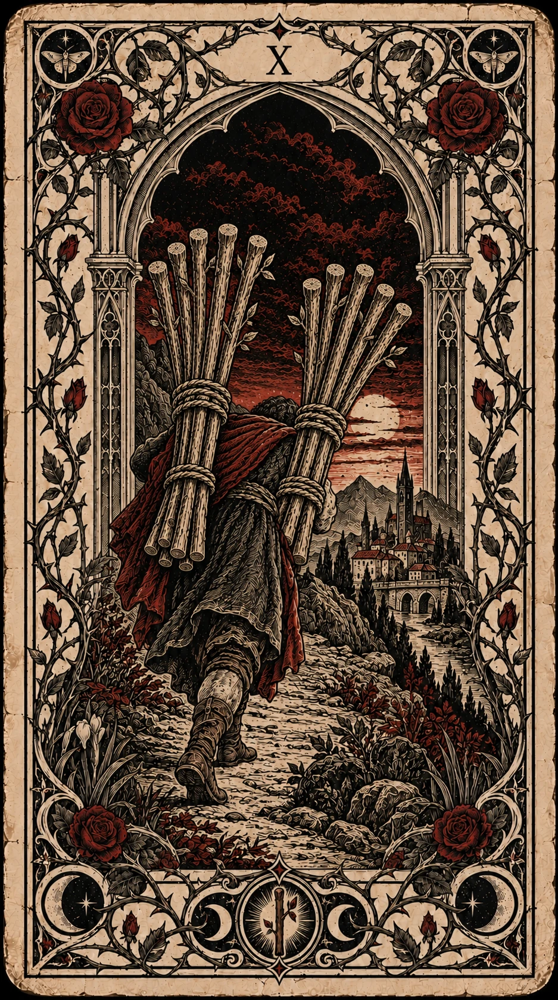
Ten of Wands
สิบไม้เท้า
wands-tenตั้งตรง: ภาระ รับมากเกินไป
กลับหัว: วางภาระ ปัดความรับผิดชอบ
คืนภาระที่ไม่ใช่ของตน
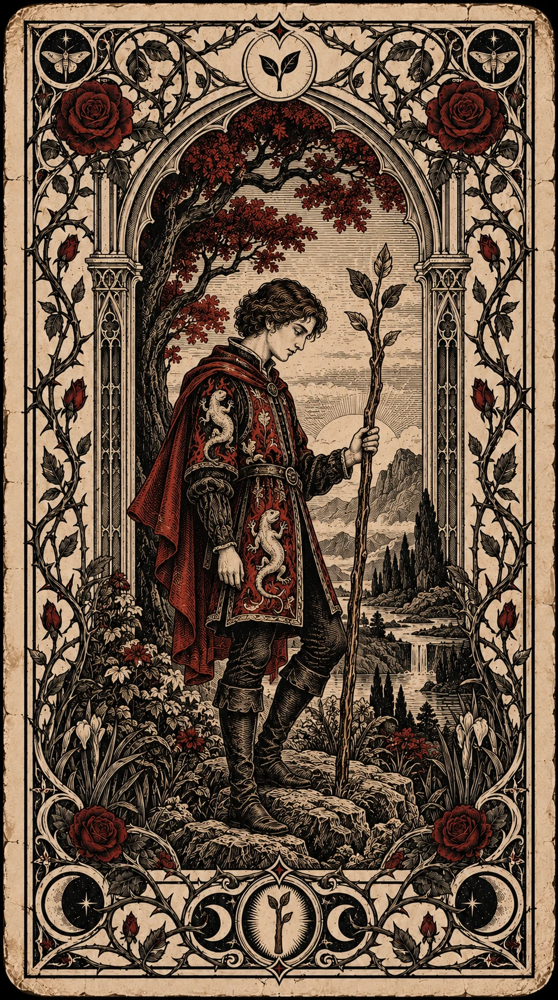
Page of Wands
มหาดเล็กไม้เท้า
wands-pageตั้งตรง: อยากเรียนรู้ ข่าวเริ่มต้น
กลับหัว: ตื่นเต้นแต่ไม่ลงมือ
ทดลองโดยไม่ต้องเก่งทันที
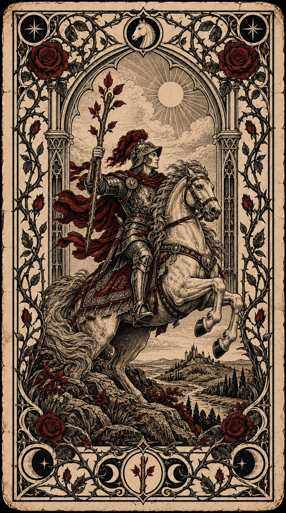
Knight of Wands
อัศวินไม้เท้า
wands-knightตั้งตรง: กล้าลุย เคลื่อนไหว ความร้อนแรง
กลับหัว: หุนหัน ไม่สม่ำเสมอ
วางจังหวะก่อนพุ่ง
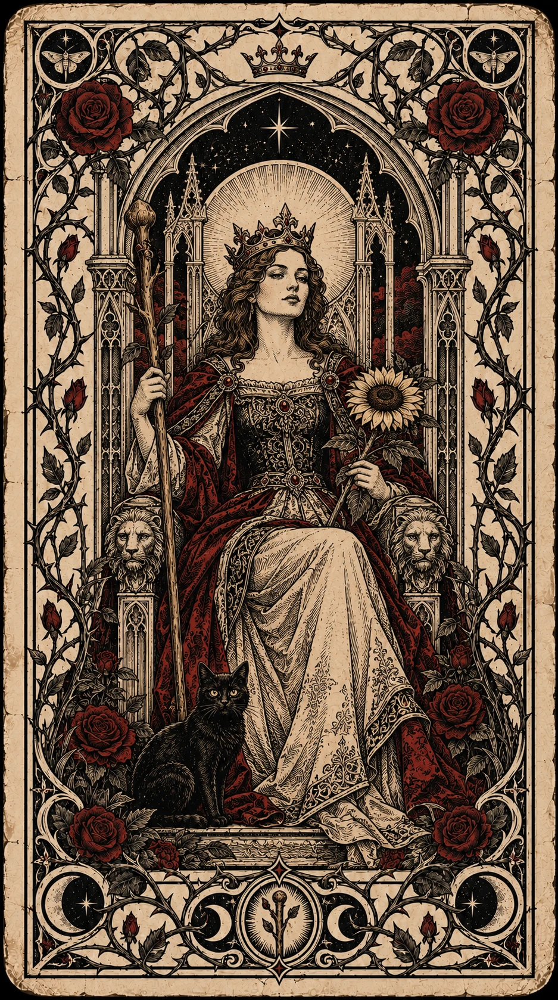
Queen of Wands
ราชินีไม้เท้า
wands-queenตั้งตรง: มั่นใจ มีเสน่ห์ สนับสนุน
กลับหัว: หวงพื้นที่ ไม่มั่นใจตนเอง
ใช้ความมั่นใจเพื่อส่งเสริม
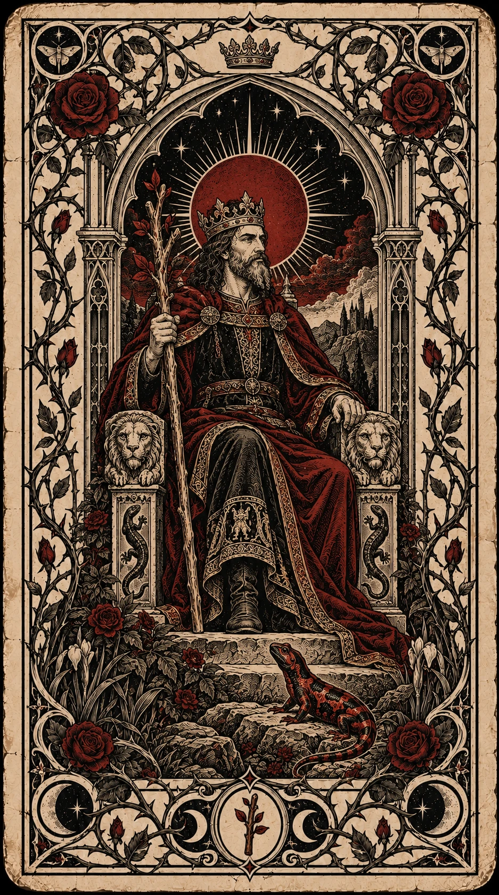
King of Wands
ราชาไม้เท้า
wands-kingตั้งตรง: นำด้วยวิสัยทัศน์ กล้าตัดสินใจ
กลับหัว: ใช้อำนาจ ใจร้อน
เปลี่ยนวิสัยทัศน์เป็นขั้นตอน
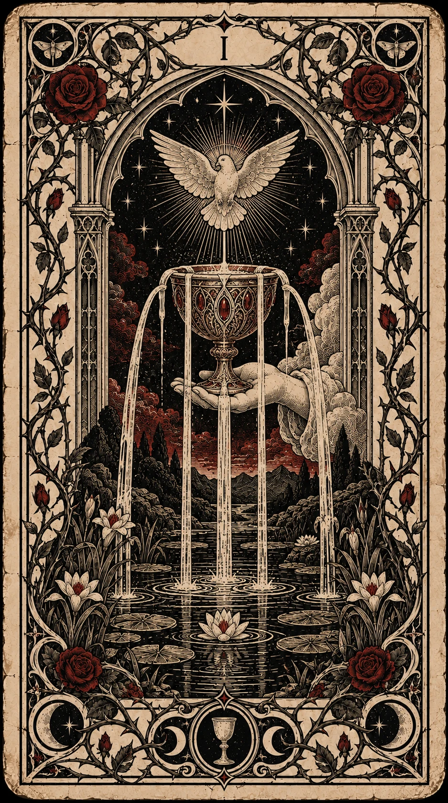
Ace of Cups
หนึ่งถ้วย
cups-aceตั้งตรง: เปิดใจ ความรู้สึกใหม่ การหล่อเลี้ยง
กลับหัว: ปิดใจ อารมณ์ล้น
ดูแลความรู้สึกก่อนตัดสินใจ
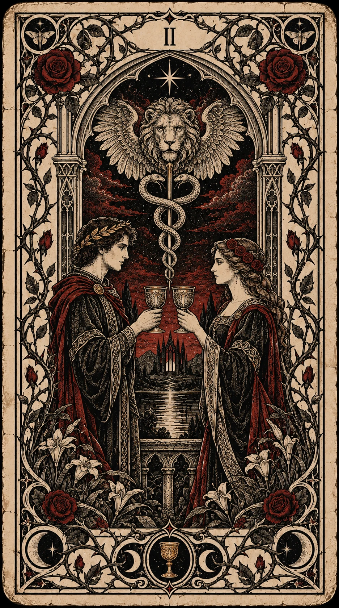
Two of Cups
สองถ้วย
cups-twoตั้งตรง: ตอบรับกัน ความร่วมมือ ความผูกพัน
กลับหัว: ไม่สมดุล ไม่เข้าใจกัน
คุยสิ่งที่ต่างฝ่ายให้และต้องการ
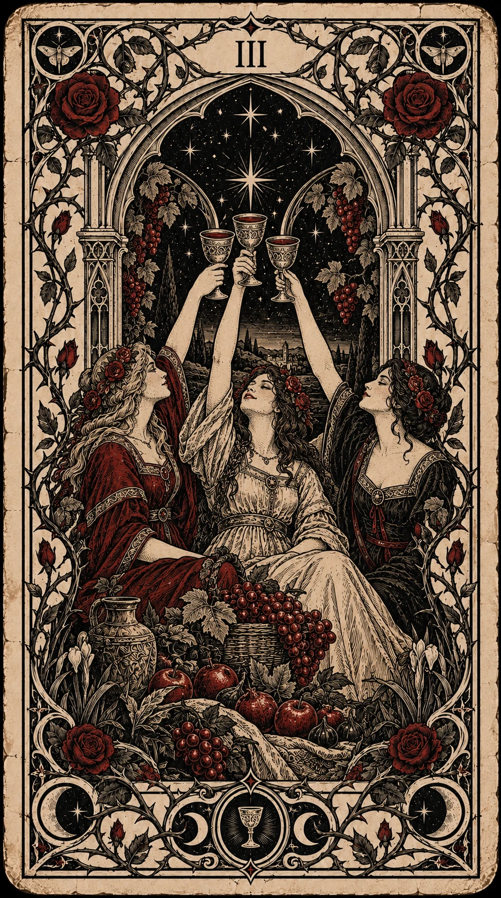
Three of Cups
สามถ้วย
cups-threeตั้งตรง: มิตรภาพ เครือข่าย การฉลอง
กลับหัว: ถูกกันออก กลุ่มกดดัน
แบ่งปันความสุขกับคนไว้ใจ
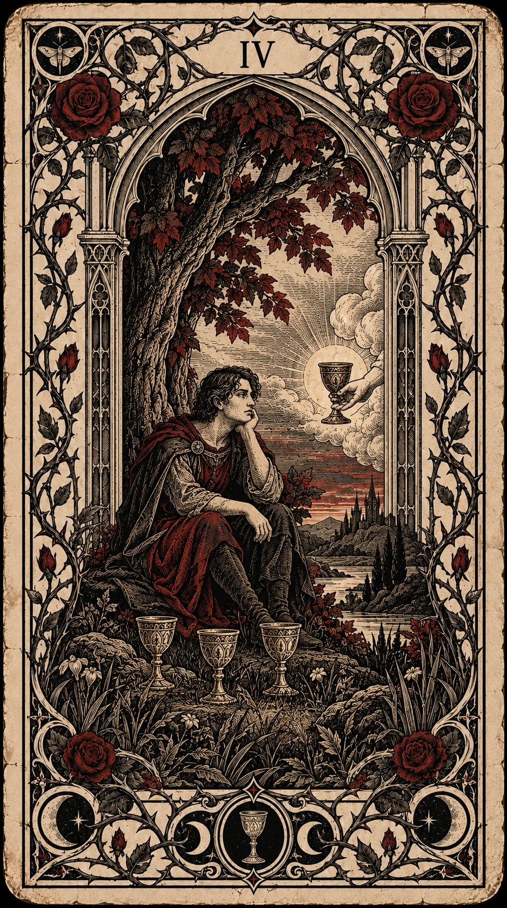
Four of Cups
สี่ถ้วย
cups-fourตั้งตรง: ทบทวนความรู้สึก ไม่พอใจสิ่งเดิม
กลับหัว: เปิดรับใหม่ ไม่เห็นโอกาส
สังเกตโอกาสที่มองข้าม
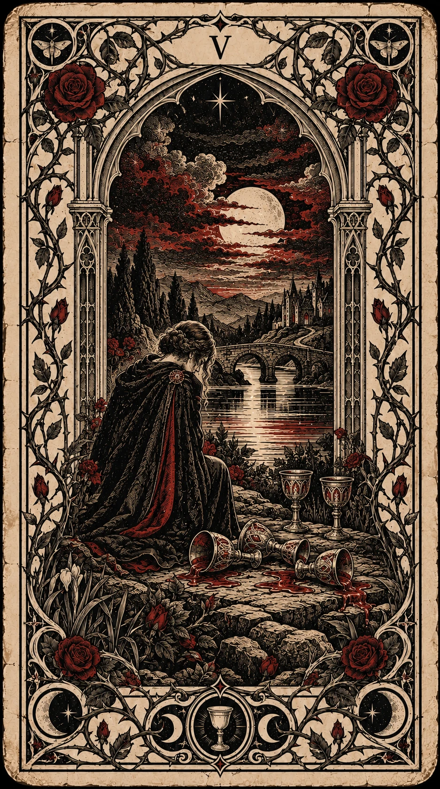
Five of Cups
ห้าถ้วย
cups-fiveตั้งตรง: เสียใจ เสียดาย มองสิ่งที่หายไป
กลับหัว: เริ่มยอมรับ ติดความเศร้า
ขอแรงสนับสนุนที่ยังเข้าถึงได้
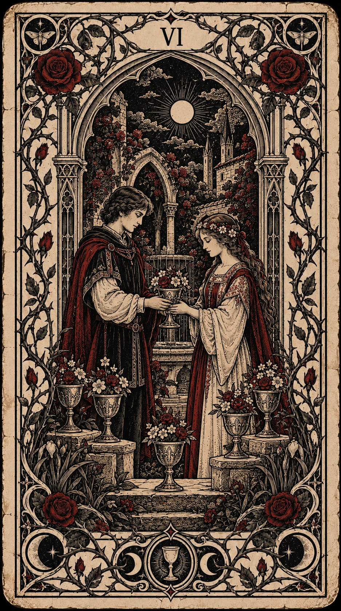
Six of Cups
หกถ้วย
cups-sixตั้งตรง: ความทรงจำ ความอ่อนโยน อดีต
กลับหัว: ติดอดีต เรียนรู้การเติบโต
นำความอบอุ่นเดิมมาใช้วันนี้
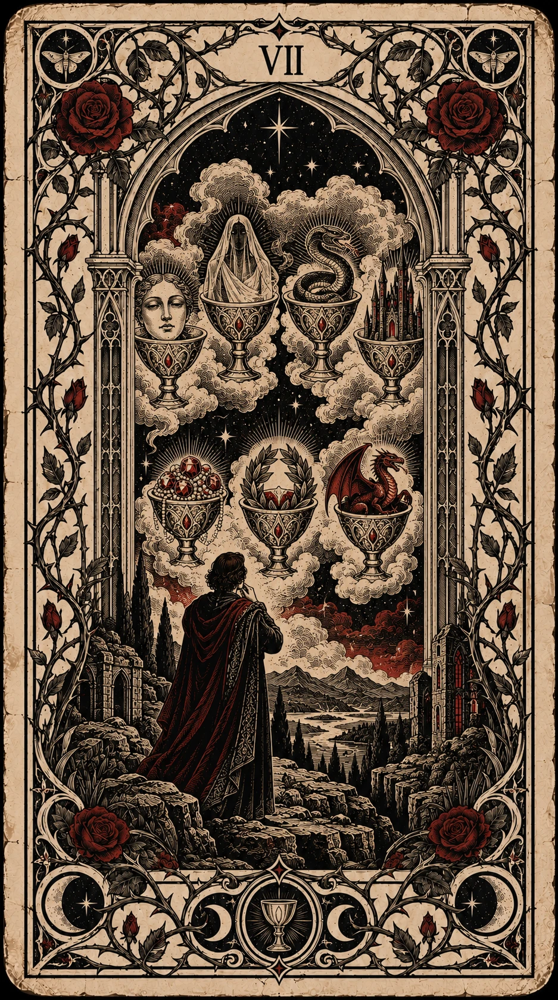
Seven of Cups
เจ็ดถ้วย
cups-sevenตั้งตรง: ทางเลือก จินตนาการ สิ่งลวงตา
กลับหัว: เริ่มเลือก สับสนกับความหวัง
ใช้เกณฑ์ตัดตัวเลือก
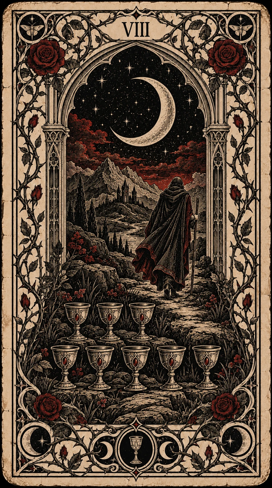
Eight of Cups
แปดถ้วย
cups-eightตั้งตรง: เดินออกจากสิ่งไม่เติมเต็ม
กลับหัว: กลัวจากไป กลับไปวนเดิม
เลือกการเติบโตพร้อมยอมรับความสูญเสีย
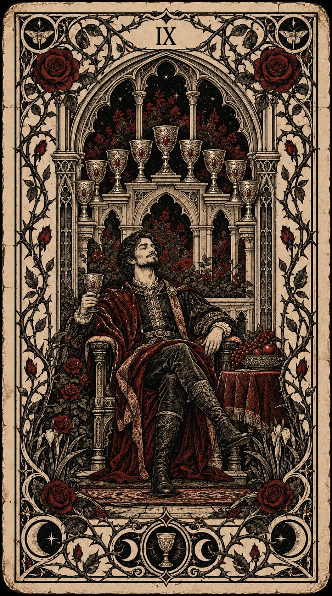
Nine of Cups
เก้าถ้วย
cups-nineตั้งตรง: พึงพอใจ เห็นคุณค่าสิ่งที่มี
กลับหัว: แสวงการเติมเต็มจากภายนอก
นิยามความพอของตน
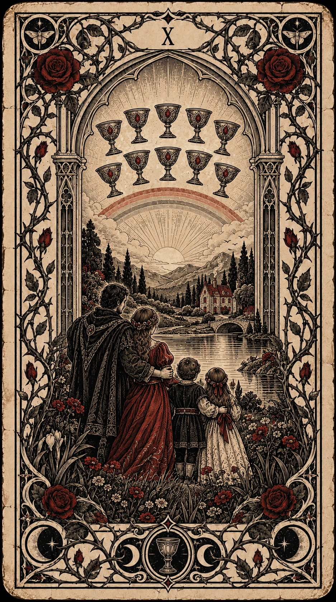
Ten of Cups
สิบถ้วย
cups-tenตั้งตรง: บ้านใจ ความสุขร่วม ความกลมกลืน
กลับหัว: ภาพฝันไม่ตรงจริง ขาดการเชื่อมโยง
ดูแลความผูกพันผ่านชีวิตประจำวัน
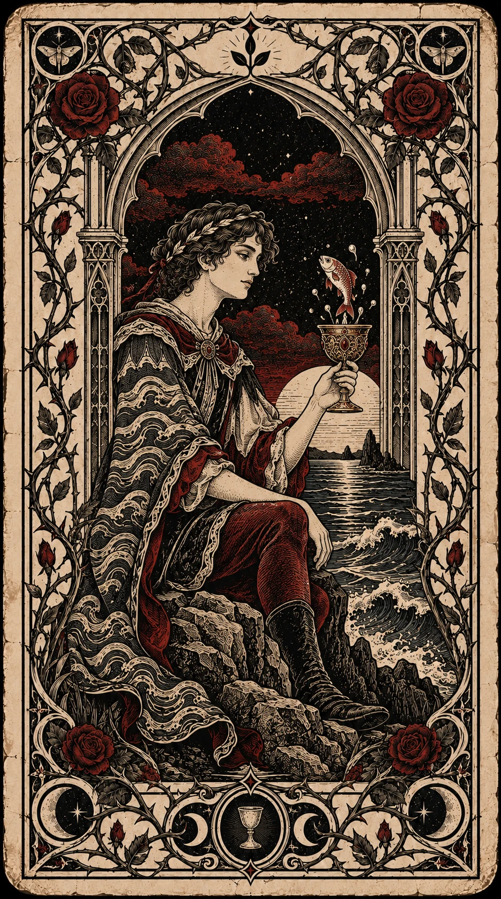
Page of Cups
มหาดเล็กถ้วย
cups-pageตั้งตรง: อ่อนโยน ข่าวความรู้สึก ความสร้างสรรค์
กลับหัว: อารมณ์ไม่นิ่ง กลัวแสดงใจ
ฟังความประหลาดใจในใจ
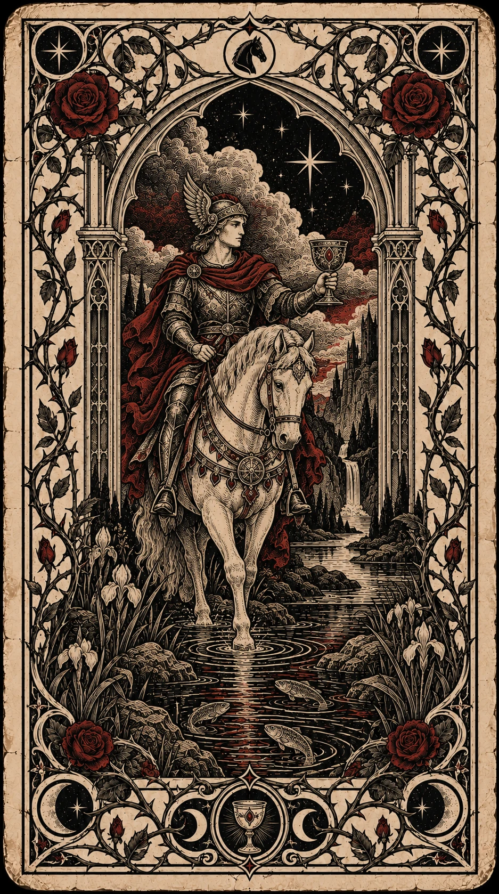
Knight of Cups
อัศวินถ้วย
cups-knightตั้งตรง: เชื้อเชิญ โรแมนติก เดินตามใจ
กลับหัว: ฝันเกินจริง สัญญาไม่ลงมือ
เสนอความรู้สึกพร้อมรับคำตอบ
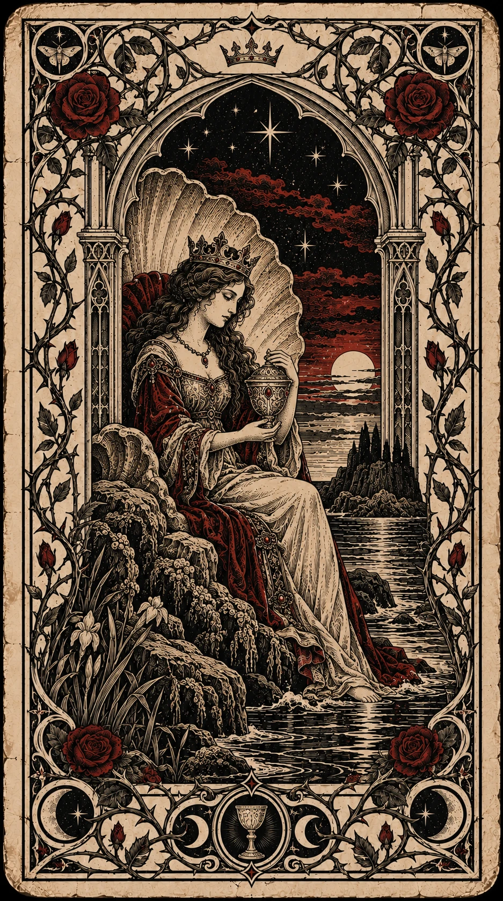
Queen of Cups
ราชินีถ้วย
cups-queenตั้งตรง: เข้าอกเข้าใจ สัญชาตญาณ ดูแลใจ
กลับหัว: รับอารมณ์คนอื่นจนล้น
แยกความรู้สึกของตนจากของผู้อื่น
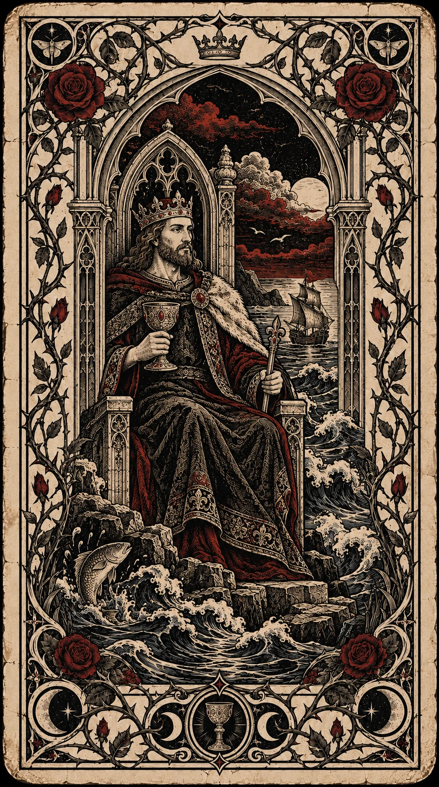
King of Cups
ราชาถ้วย
cups-kingตั้งตรง: มั่นคงทางอารมณ์ เมตตา
กลับหัว: เก็บกด ใช้อารมณ์ควบคุม
รับรู้อารมณ์โดยไม่ปล่อยให้กำกับทุกอย่าง
Ace of Swords
หนึ่งดาบ
swords-aceตั้งตรง: ชัดเจน ความจริง การตัดสินใจ
กลับหัว: คิดไม่ชัด ใช้คำพูดทำร้าย
ตรวจข้อมูลก่อนฟันธง
Two of Swords
สองดาบ
swords-twoตั้งตรง: ลังเล ตั้งการ์ด ทางเลือกยาก
กลับหัว: ข้อมูลปรากฏ เลี่ยงไม่ได้
ระบุข้อมูลที่ต้องรู้เพื่อตัดสินใจ
Three of Swords
สามดาบ
swords-threeตั้งตรง: เจ็บปวด ความจริงที่แทงใจ
กลับหัว: เยียวยา เก็บความเจ็บไว้
ตั้งชื่อความเจ็บแล้วหาที่พึ่ง
Four of Swords
สี่ดาบ
swords-fourตั้งตรง: พัก ฟื้นตัว เว้นระยะ
กลับหัว: พักไม่พอ กลับมาเคลื่อนไหว
พักอย่างตั้งใจ
Five of Swords
ห้าดาบ
swords-fiveตั้งตรง: ชนะที่มีต้นทุน ความขัดแย้ง
กลับหัว: คืนดี ค้างความขุ่นเคือง
ถามว่าชัยชนะนี้คุ้มไหม
Six of Swords
หกดาบ
swords-sixตั้งตรง: เคลื่อนผ่านความยาก เปลี่ยนผ่าน
กลับหัว: ติดค้าง พาปัญหาเดิมไปต่อ
ขอความช่วยเหลือระหว่างเปลี่ยนผ่าน
Seven of Swords
เจ็ดดาบ
swords-sevenตั้งตรง: กลยุทธ์ ปกปิด ทำลำพัง
กลับหัว: เปิดเผย รับผิดชอบ ทบทวนวิธี
ตรวจความซื่อสัตย์ของแผน
Eight of Swords
แปดดาบ
swords-eightตั้งตรง: รู้สึกติดกับ ความเชื่อจำกัดตน
กลับหัว: เห็นทางออก เริ่มคืนอำนาจ
หาทางเลือกเล็ก ๆ ที่ยังมี
Nine of Swords
เก้าดาบ
swords-nineตั้งตรง: กังวล คิดวน ความกลัวกลางคืน
กลับหัว: ขอความช่วยเหลือ เห็นความคิดชัด
เขียนสิ่งที่กังวลและสิ่งที่ทำได้
Ten of Swords
สิบดาบ
swords-tenตั้งตรง: ถึงขีดสุด สิ้นสุดวงจรเจ็บ
กลับหัว: ฟื้นหลังจบ กลัวปล่อยวาง
หยุดวงจรที่เกินกำลัง
Page of Swords
มหาดเล็กดาบ
swords-pageตั้งตรง: ตั้งคำถาม สังเกต ข่าวสาร
กลับหัว: ระแวง ข่าวลือ คำพูดไม่คิด
ตรวจแหล่งข่าวและฟังก่อนตอบ
Knight of Swords
อัศวินดาบ
swords-knightตั้งตรง: ตรงประเด็น เร็ว กล้าคิด
กลับหัว: หุนหัน โต้เถียงไม่ฟัง
ตรวจทิศก่อนเร่ง
Queen of Swords
ราชินีดาบ
swords-queenตั้งตรง: ชัดเจน เป็นอิสระ มีขอบเขต
กลับหัว: เย็นชา วิจารณ์แรง
ซื่อตรงโดยยังมีเมตตา
King of Swords
ราชาดาบ
swords-kingตั้งตรง: เหตุผล มาตรฐาน ความเที่ยงตรง
กลับหัว: แข็งทื่อ ใช้เหตุผลกดผู้อื่น
ตั้งเกณฑ์ที่ใช้กับทุกฝ่ายเท่ากัน
Ace of Pentacles
หนึ่งเหรียญ
pentacles-aceตั้งตรง: โอกาสจับต้องได้ เริ่มฐานมั่นคง
กลับหัว: โอกาสหลุด แผนยังไม่พร้อม
วางทรัพยากรให้พอสำหรับก้าวแรก
Two of Pentacles
สองเหรียญ
pentacles-twoตั้งตรง: จัดสมดุล ปรับตัว หลายภาระ
กลับหัว: เสียสมดุล รับมากเกินไป
เลือกสิ่งสำคัญก่อน
Three of Pentacles
สามเหรียญ
pentacles-threeตั้งตรง: ร่วมมือ ฝีมือ เรียนรู้ร่วม
กลับหัว: บทบาทไม่ชัด ขาดการประสาน
ตกลงบทบาทและมาตรฐาน
Four of Pentacles
สี่เหรียญ
pentacles-fourตั้งตรง: รักษาทรัพยากร ยึดความมั่นคง
กลับหัว: คลายการยึด กลัวสูญเสีย
แยกความมั่นคงจากการครอบครอง
Five of Pentacles
ห้าเหรียญ
pentacles-fiveตั้งตรง: ขาดแคลน รู้สึกถูกทิ้ง ต้องการพึ่งพา
กลับหัว: เริ่มรับความช่วยเหลือ ติดความอับอาย
มองหาประตูสนับสนุนที่เปิดอยู่
Six of Pentacles
หกเหรียญ
pentacles-sixตั้งตรง: ให้รับ แบ่งปัน ความเป็นธรรม
กลับหัว: ให้เพื่อควบคุม ไม่สมดุล
ให้ตามกำลังและรับอย่างมีศักดิ์ศรี
Seven of Pentacles
เจ็ดเหรียญ
pentacles-sevenตั้งตรง: ประเมินผล อดทน ลงทุนระยะยาว
กลับหัว: ท้อกับผลช้า ลงแรงผิดที่
ประเมินผลแล้วปรับวิธี
Eight of Pentacles
แปดเหรียญ
pentacles-eightตั้งตรง: ฝึกฝน ใส่ใจ ทำต่อเนื่อง
กลับหัว: ทำซ้ำไร้ทิศ ยึดสมบูรณ์แบบ
ฝึกส่วนที่ต้องพัฒนาอย่างเจาะจง
Nine of Pentacles
เก้าเหรียญ
pentacles-nineตั้งตรง: พึ่งตนเอง ความสำเร็จ ความพอ
กลับหัว: ดูสำเร็จแต่ไม่มั่นคง แยกตัว
รับรู้คุณค่าจากสิ่งที่ตนสร้าง
Ten of Pentacles
สิบเหรียญ
pentacles-tenตั้งตรง: ฐานระยะยาว ครอบครัว มรดก
กลับหัว: ภาระครอบครัว รากฐานสั่นคลอน
วางแผนให้คนหลายรุ่นอยู่ร่วมได้
Page of Pentacles
มหาดเล็กเหรียญ
pentacles-pageตั้งตรง: ตั้งใจเรียน เริ่มแผนจริง
กลับหัว: ผัดวัน ขาดการฝึก
เริ่มเรียนทักษะที่ใช้ต่อได้
Knight of Pentacles
อัศวินเหรียญ
pentacles-knightตั้งตรง: รับผิดชอบ สม่ำเสมอ อดทน
กลับหัว: ชะงัก ดื้อ งานกลบชีวิต
ทำตามแผนแต่ตรวจว่ายังเหมาะไหม
Queen of Pentacles
ราชินีเหรียญ
pentacles-queenตั้งตรง: ดูแลอย่างเป็นรูปธรรม อบอุ่น มั่นคง
กลับหัว: ดูแลจนล้า กังวลทรัพยากร
จัดทรัพยากรให้ชีวิตประจำวันดีขึ้น
King of Pentacles
ราชาเหรียญ
pentacles-kingตั้งตรง: บริหารทรัพยากร สำเร็จ มั่นคง
กลับหัว: ยึดวัตถุ ควบคุมด้วยเงิน
ใช้ทรัพยากรอย่างรับผิดชอบระยะยาว